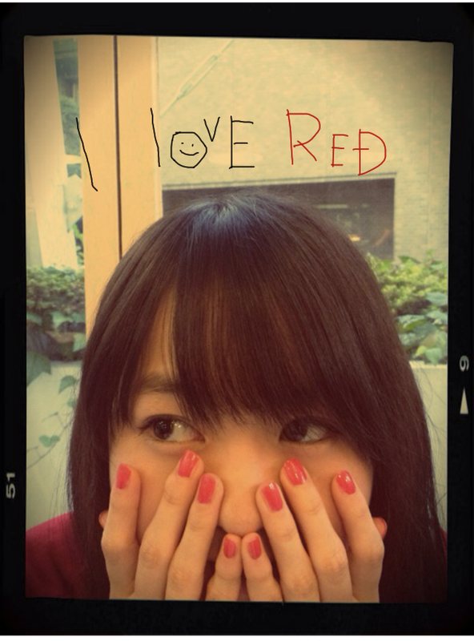
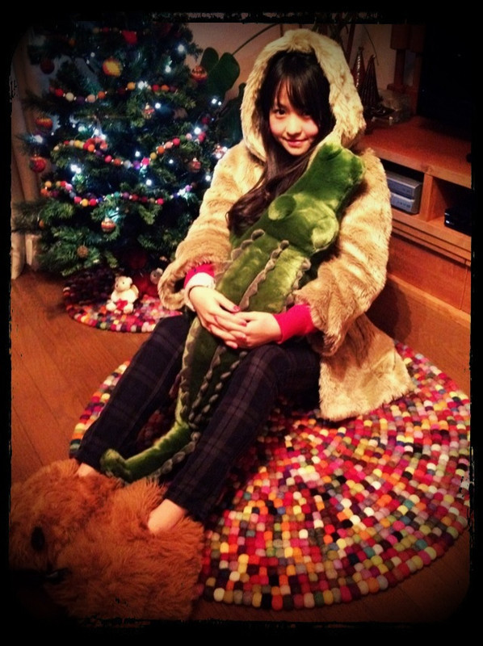

| 2011/12 25 Sun | 36回目*marika |
☆☆MerrY ChRistMAs☆☆
ベビたんだよ^^
楽しい楽しい夜です。
..................................
・眼鏡かけてる人とかけてない人
どっちが好きー？
どっちも好きですよ-^^*!!
お兄ちゃんメガネやし、
私も授業中メガネなんですよ-♪
・まりりは家族でクリスマスとかした？
今日Eveに家でチキンとケーキ食べました---!!
おいしかった♡
・ファンからのプレゼント、
ナニ系がうれしいですか？
そうですね。
何でも喜びます:D!!
うれしいです。
何系？と訊かれたら...
雑貨とか、ファッション系でも
アロマ系でも何でもうれしい>
あぁ全部うれしいなぁ。
・ホワイトタイガー好きなのかな？
他にぬいぐるみで好きなものある？
ホワイトタイガーかわいい♡
好きなぬいぐるみだったら
動物かな:)
動物だいすき♡
すみません>
今日はここまでで!!
最近答えるのが
ちまちましててごめんなさい>
...............................

クリスマスだから気分的に
赤のネイルしてみた♡
赤すき ♡♡

クリスマスプレゼント--------!!!!
サンタさん....パパ、ママ
あーりーがーとー>
ずっと欲しかった
ファーコート...jouetie
ぬいぐるみ...ワニでした♡♡
テンション高山です=33
めちゃくちゃうれしいです。
わがままな私を見守ってくれます。
ありがとうございました。
おいしいディナーもありがとう＊＊
大切にします。
『乃木坂46
クリスマススペシャルウィーク
in銀座ソニービル』
LaST!!
わくわくしています。
クリスマスの25日。
みなさんと過ごせるの、
とてもうれしいです♪
HaPpyな笑顔で
みなさんを迎えられたらいいな...。
いつもありがとう
の想いを込めて.....。＊*+.
2011年にみなさんとお会いするのは
最後になってしまいますが、
良い思い出に
最高の思い出に
なりますように。
HaPpy MeRRy CHriStmAs!!!***
LOvE


ベビたん*****bA by marika